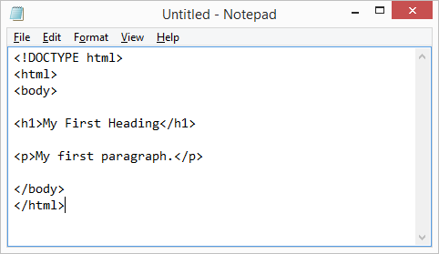
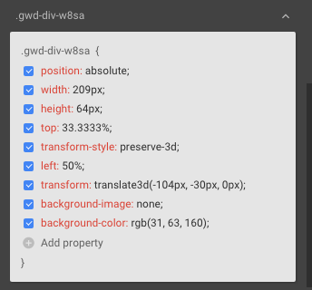

Introduction
Web development is one of the most exciting and in-demand skills today. Whether you want to build your own website, start freelancing, or become a professional developer, learning web development is a great first step.
1. Understanding HTML
HTML (HyperText Markup Language) is the structure of every website. It defines elements like headings, paragraphs, images, and links.

2. Styling with CSS
CSS (Cascading Style Sheets) is used to style your website. It controls colors, layouts, fonts, and responsiveness. A good design improves user experience significantly.

3. Adding Interactivity with JavaScript
JavaScript makes your website interactive. From buttons and animations to dynamic content, JavaScript brings your site to life.

4. Tools You Need
- Code Editor (VS Code recommended)
- Browser (Chrome or Firefox)
- Basic understanding of Git (optional but useful)
5. Tips for Beginners
Start small. Build simple projects like a personal portfolio or landing page. Practice daily and keep improving your skills step by step.
"The best way to learn web development is by building real projects."
Conclusion
Web development is a journey. With consistent practice and curiosity, you can build amazing websites and applications. Keep learning and stay motivated!
← Back to Blogs